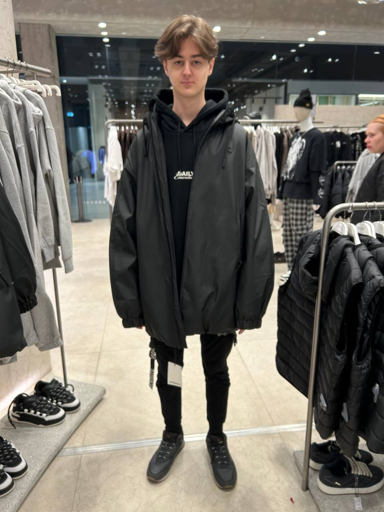

Хто я такий?
Наразі я є студентом Національного університету біоресурсів і природокористування України. Навчаюсь на факультеті Інформаційних технологій за спеціальністю "Інженерія Програмного Забезпечення" на другому курсі. Моя мета - стати професійним розробником програмного забезпечення, а також створювати сайти, які допоможуть людям у їхній повсякденній діяльності. Я вмотивований знайти роботу за своєю спеціальністю, адже програмування це те, чим я захоплювався з дитинства. Нижче ви можете побачити мене на фото.

Мій досвід у програмуванні
Свій шлях програмування я почав зі школи: я зацікавився взаємодією з комп'ютером, напряму вивчаючи систему та можливості її покращення, пізніше почав дослідження операційних систем, написаних на базі Linux. Паралельно цьому почав цікавитись створенням пз для комп'ютера, використовуючи різні мови програмування, такі як: Python для написання скриптів для ігор, якими я цікавився, та C++ легшого і швидчого вирішення свого домашьного завдання з математики та фізики, програмуючи додаток таким чином, щоб він обраховував потрібні мені задачі за заданими формулами. Вступивши до університету, я почав поглиблено вивчати програмування низького рівня, взаємодіючи напряму з пам'яттю комп'ютера, на новій для мене мові C, і паралельно продовжував вивчення C++. В кінці першого курсу одна з викладачів запропонувала мені написати для університету телеграм бота, який би допомагав першокурсинкам знайти потрібну для них інформацію, і став би для них гідом. Цього бота я вирішив писати на мові програмування Python через те, що він має багато бібліотек, які спрощують створення ботів. Зараз ви можете знайти мого бота в телеграмі за тегом
@NUBiPUniBuddy_bot.
Після розробки бота мене також задіювали у створенні сайту мікрокурсів Університету, який я разом з командою досвідчених програмістів створювали на React.js. Цей сайт ви можете знайти за посиланням: https://microcourses.nubip.edu.ua/aboutUs
Починаючи з другого курсу, мої знання росли в геометричній прогресії. Наразі я впевнено почуваю себе у написанні ООП програм на мові С++ на С#, а також паралельно цьому я почав вивчати і практикуватись у веб-програмуванні сайтів.